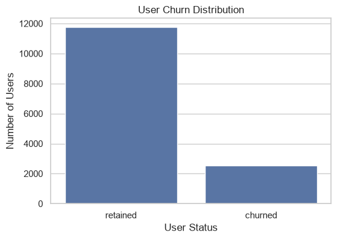
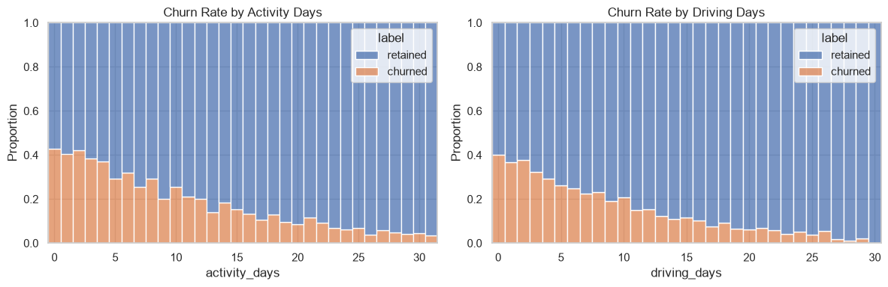
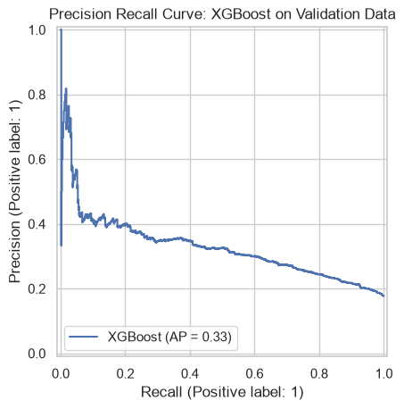
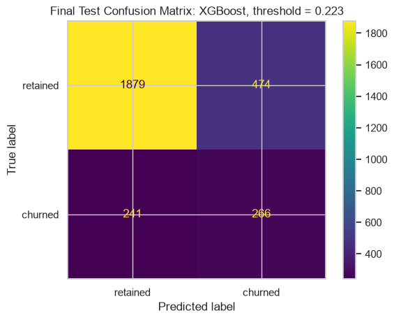
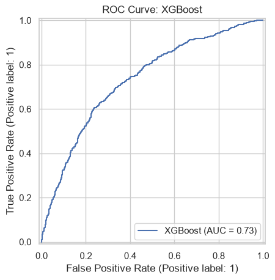
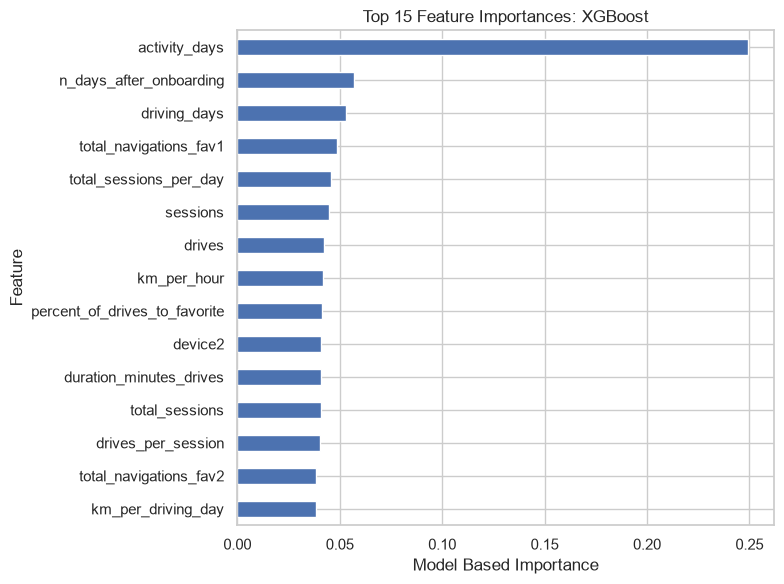

Business Problem
A navigation product may want to identify users who could churn so that retention efforts can be prioritized. The analytical task here is to model monthly churn from available user-level behavior and understand how much predictive signal the dataset actually contains.
Objective
Build a classifier that can distinguish retained users from churned users and evaluate the trade-off between catching churners and limiting false positives.
Important Context
The scenario and dataset are educational and fictitious. The reported performance should not be interpreted as real Waze product performance.
Analytical Workflow
The workflow keeps model development, threshold selection, and final evaluation separate.
Removed 700 records with missing churn labels and verified that the labeled dataset contained no duplicate rows.
Examined churn distribution, device behavior, activity patterns, and user engagement characteristics.
Used Welch's two-sample t-test to examine the difference in average monthly drives between iPhone and Android users.
Created behavioral ratios and indicators including kilometers per driving day, sessions per day, kilometers per drive, and a professional-driver indicator.
Compared Logistic Regression with Random Forest and XGBoost using a stratified train, validation, and test workflow. Outlier caps were learned from training data only.
The XGBoost operating threshold was selected on validation data for a target recall of 0.50 and then frozen before final test evaluation.
The untouched test set was evaluated at both the default 0.50 threshold and the validation-selected 0.223 threshold.
Tools
PythonPandasNumPy Scikit-learnXGBoostMatplotlib Statistical TestingFeature EngineeringFinal Model Results
XGBoost was selected among the ensemble models using validation recall. The final test was then evaluated after the operating threshold had been fixed.
At default threshold · 0.50
Precision 45.55% · F1 24.93% · ROC AUC 0.7318
At validation-selected threshold · 0.223
Precision 35.95% · F1 42.66% · Accuracy 75.00%
Final test at 0.223
For the churn class, precision was 0.36, recall was 0.52, and F1 was 0.43. The retained class had precision 0.89 and recall 0.80.
Model selection
XGBoost achieved validation recall of 0.1381 versus 0.1085 for Random Forest and 0.0986 for Logistic Regression at the default threshold. It was selected among the ensemble models by validation recall.
Statistical Finding
The analysis also tested whether average monthly driving differed by device type.
Interpretation
The test did not provide enough evidence at the 0.05 significance level to reject the null hypothesis of equal mean monthly drives between iPhone and Android users in this dataset. This is a statistical association test, not a causal analysis.
Selected Visuals
A few of the most useful outputs from the technical notebook.






What the Model Learned
The strongest model-based signals included activity duration, onboarding age, driving behavior, navigation behavior, and engineered usage ratios.
Top signal
Activity days had the largest XGBoost feature importance in the notebook.
Next signals
Other prominent features included days after onboarding, driving days, favorite-location navigation, total sessions per day, sessions, drives, kilometers per hour, and the engineered favorite-drive ratio.
Project Files
The technical work and supporting documents are available with the case study.
Technical Notebook
Full Python workflow covering data preparation, analysis, modeling, threshold tuning, evaluation, and model persistence.
Executive Summary
Concise stakeholder-oriented summary of the business problem, methodology, results, and limitations.
Job Proposal
Freelancing-oriented description of the workflow and deliverables demonstrated by this project.
Limitations & Next Steps
Educational dataset
The dataset is simulated and contains mostly monthly aggregates, so performance should not be generalized to real-world Waze users.
Limited behavioral detail
More granular drive-level behavior, route patterns, location context, road interactions, and richer app usage data could provide additional predictive signal.
Prediction-time availability
A production workflow would need to verify that every predictor is available before the prediction is made and that preprocessing remains consistent.
Future evaluation
Fresh data should be used to assess whether the observed signal persists and to select an operating threshold from explicit business costs.
Project Takeaway
This case study shows the practical difference between building a classifier and deciding how that classifier should be operated. The model produced a moderate ROC AUC, while threshold selection materially changed churn recall. The result points to both a usable analytical workflow and a clear data limitation: stronger behavioral detail would be needed to determine how far churn prediction can be pushed.